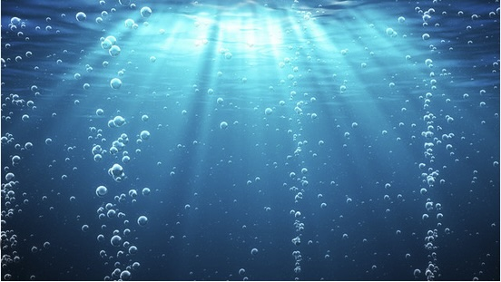
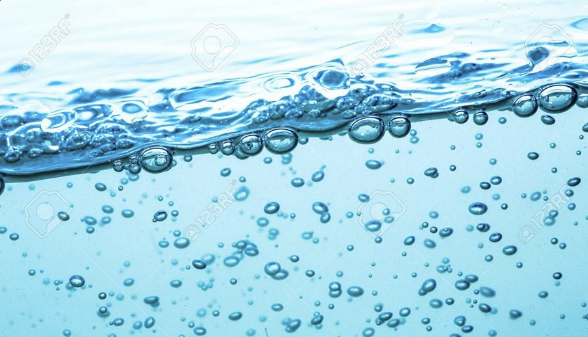

Experiment 02 - Living Impressions
Description
This experiment offers a generative design of a living expression inspired by these images:
 Technical
Relation to inssiring image:
Color: The sky, sun, waves and bubble colors were individually picked from HTML Color Mixer and HTML Color Picker based on the colors from the inspiring images.
Primitives: The bubbles are rendered using ellipses, and the sun is rendered using a circle with the sky being a rectangle.
Polygons: The waves are layers of randomly polygons using vertex calls like the polygons from the mountains in the template.
Composition: Different random seed values lead to differently shaped waves and differently positioned bubbles and sun.
Life: The position of bubbles is animated over time to simulate them floating in the water and the slightly responds to the vertical motion of the mouse cursor. The sun animates over time to simulate the view of the sun moving across the sky with the response to the horizontal motion of the mouse cursor.
Borrowed from UCSC Prof Adam M. Smith
Reflection
As I was working on this, I was slowly getting in my creative element. It was exciting to see the images coming together. I enjoyed seeing the layers of waves with the different colors and the sporadic bubbles in the ocean. It was really pleasing to see the bubbles fade when they got closer to the wave's surface. It was stressful to make so many little adjustments just to make it look similar to the image. There was more I wanted to add, but there was so little time to do more experimenting.